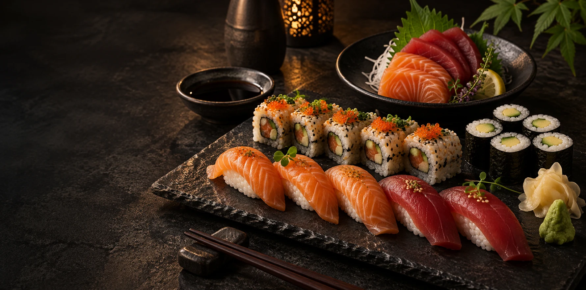
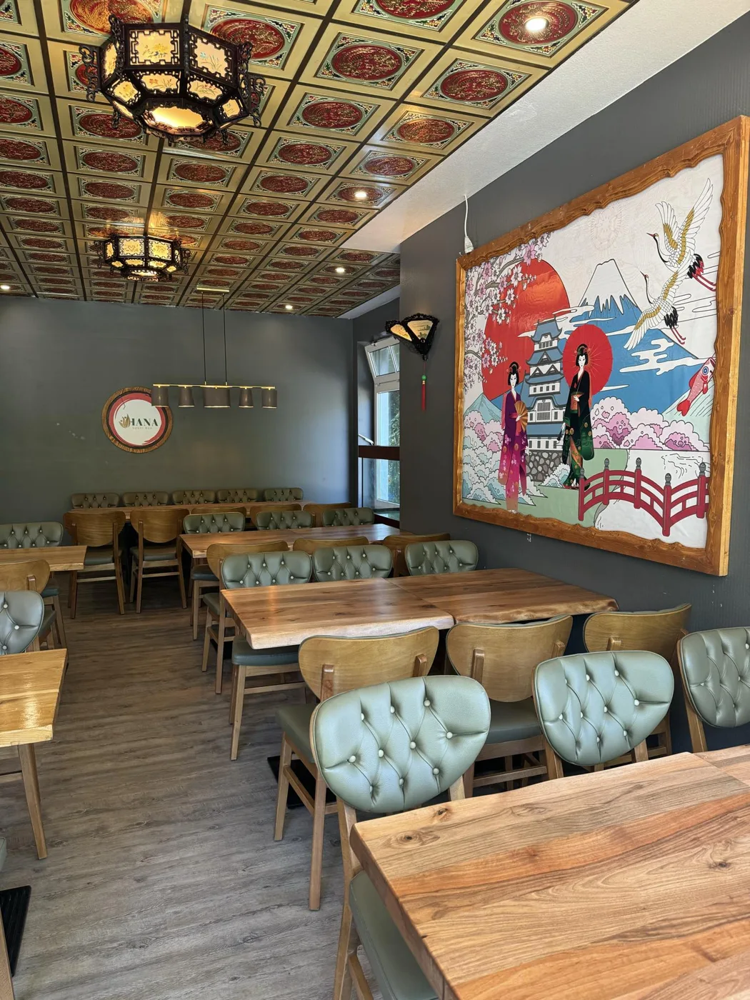

14,00 €
Peking Suppe
Sauer scharf.
Willkommen bei HANA
Frisches Sushi, feines Sashimi und warme Spezialitäten, mit Leidenschaft für Sie zubereitet.

Mo – Fr 12:00–14:30 · 17:00–22:00 Uhr
Sa, So & Feiertage 12:00–15:00 · 16:00–22:00 Uhr

Bei HANA in Olsberg treffen sorgfältig zubereitetes Sushi und feines Sashimi auf traditionelle warme Gerichte und moderne Asia-Fusion. Entdecken Sie die Vielfalt der japanischen Küche à la carte.
Stilvolle Einrichtung, dezente Beleuchtung und eine Auswahl an Weinen und Cocktails laden zu einem entspannten Abend ein. Genießen Sie gutes Essen in angenehmer Gesellschaft. Wir freuen uns auf Ihren Besuch.
Ihr Tisch für einen besonderen AbendIhr Lieblingsessen, ganz entspannt zur Abholung.
Bezahlt wird direkt bei uns im Restaurant.
Gerichte entdecken und in den Warenkorb legen.
Kontaktdaten und gewünschte Abholzeit angeben.
Bestellung per E-Mail anfragen. Bitte warten Sie auf unsere Bestätigung.
Ein Abend, auf den man sich freut.
Reservieren Sie bequem Ihren Tisch bei HANA
Japanisches Restaurant in Olsberg.
Wunschtermin wählen und Reservierung anfragen.
Ihr Tisch ist reserviert, sobald Sie eine Bestätigung von HANA erhalten.
E-Mail mit Reservierung öffnen ↗Es wurde noch keine Anfrage übermittelt. Senden Sie die vorbereitete Nachricht in Ihrem E-Mail-Programm ab.
Unsere Küche, unser Restaurant. Entdecken Sie HANA in Olsberg.
HANA Japanisches Restaurant
Carlsauestraße 6